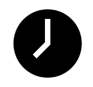

Contactez-nous : (+212) 123-456-789

Horaires : Lun-Ven de 8h à 17h
 Made In Morocco
Made In Morocco
Made In Morocco
Made In Morocco
Consultez la documentation officielle pour mieux comprendre comment intégrer et utiliser Zarr pour vos données.
Utilisez ce site d'une documentation complète des formats de stockage Zarr.
Explorez les discussions sur les cas pratiques, les problèmes rencontrés par la communauté, et les réponses des développeurs.